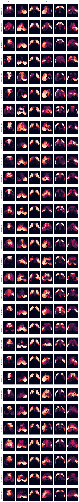
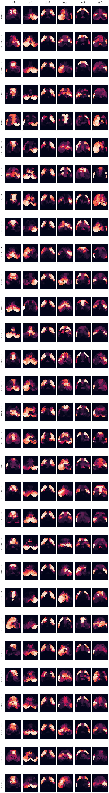
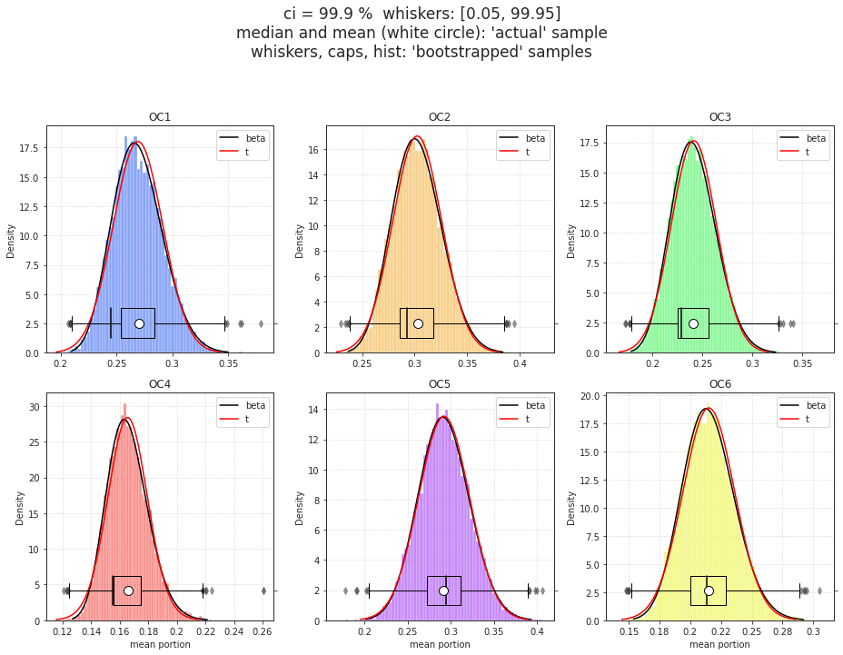

Aug 21st, 2021¶
Motivation: SVINET cleaned up results, bootstrapping, binning
# HIDE CODE
import os
import sys
import nibabel as nib
import networkx as nx
from time import time
from pprint import pprint
from copy import deepcopy as dc
from os.path import join as pjoin
from myterial import orange, blue_grey
from IPython.display import display, IFrame, HTML
from matplotlib.colors import rgb2hex, to_rgb
import matplotlib.pyplot as plt
import seaborn as sns
# set style & no interpolalation
import matplotlib
matplotlib.rcParams['image.interpolation'] = 'none'
sns.set_style('whitegrid')
# tmp & extras dir
git_dir = pjoin(os.environ['HOME'], 'Dropbox/git')
tmp_dir = pjoin(git_dir, 'jb-Ca-fMRI/tmp')
extras_dir = pjoin(git_dir, 'jb-Ca-fMRI/_extras')
# GitHub
sys.path.insert(0, pjoin(git_dir, '_Ca-fMRI'))
from register.atlas import load_allen, make_tree_graph
from register.parcellation import Parcellation
from analysis.hierarchical import Hierarchical
from analysis.svinet import *
from utils.plotting import *
from utils.render import *
from model.mouse import Mice
from model.configuration import Config
# warnings
import warnings
warnings.filterwarnings('ignore', category=DeprecationWarning)
Mice¶
svinet_props = {
'task': 'rest',
'mode': 'bold',
'metric': 'pearson',
'match_metric': 'cosine',
'graph_type': 'real',
}
mice = Mice(Config(128))
mice.combine_dfs(svinet_props.get('task', 'rest'), full=True)
k = 6
p = 20
figs_dir = [
mice.cfg.results_dir,
'SVINET',
'figs_combined',
'-'.join([
f"{svinet_props.get('graph_type', 'real')}",
f"p{p}",
f"k{k}",
]),
]
figs_dir = pjoin(*figs_dir)
os.makedirs(figs_dir, exist_ok=True)
print(figs_dir)
/home/hadi/Documents/Ca-fMRI/processed/norm-global_parcel-spatial-sym_n-128/results/SVINET/fi gs_combined/real-p20-k6
Align loaded fits using svinet.gam¶
svinet = SVINET(mice, k, p, 'sub-SLC')
output = align_svinet_group(mice, k, p, global_order=False, **svinet_props)
list(output)
current expt: 'p20'
Intel(R) oneAPI Data Analytics Library solvers for sklearn enabled: https://intelpython.github.io/daal4py/sklearn.html
['perms', 'gam', 'pi', 'gamma_all', 'svinet_all']
fig, axes = create_figure(1, k, (13.5, 4) if k == 7 else (12, 6))
gam_arr = svinet.pi2arr(output['gam'], cortex_only=True)
for ax, idx in zip(axes.ravel(), range(1, k + 1)):
im = ax.imshow(gam_arr[idx], cmap='rocket', vmin=0)
ax.set_title(f"oc_{idx}")
remove_ticks(axes)
plt.show()

nrows = len(output['gamma_all'])
fig, axes = create_figure(nrows, k, (11, 2.3 * nrows))
for i, (key, gam) in tqdm(enumerate(output['gamma_all'].items()), total=nrows):
gam_arr = svinet.pi2arr(gam, cortex_only=True)
for j, idx in enumerate(range(1, k + 1)):
im = axes[i, j].imshow(gam_arr[idx], cmap='rocket', vmin=0)
# plt.colorbar(im, ax=axes[i, j], shrink=0.5)
if i == 0:
axes[i, j].set_title(f"oc_{idx}\n")
if j == 0:
axes[i, j].set_ylabel(f"{key}\n")
remove_ticks(axes)
plt.show()

nrows = len(output['svinet_all'])
fig, axes = create_figure(nrows, k, (10, 2.4 * nrows))
for i, (key, sv) in tqdm(enumerate(output['svinet_all'].items()), total=nrows):
gam_arr = svinet.pi2arr(sv.gam, cortex_only=True)
for j, idx in enumerate(range(1, k + 1)):
im = axes[i, j].imshow(gam_arr[idx], cmap='rocket', vmin=0)
if i == 0:
axes[i, j].set_title(f"oc_{idx}\n")
if j == 0:
axes[i, j].set_ylabel(f"{key}\n")
remove_ticks(axes)
plt.show()

output['perms']
{ 'sub-SLC01_ses-1': {0: 0, 1: 1, 2: 2, 3: 3, 4: 4, 5: 5}, 'sub-SLC01_ses-2': {0: 5, 1: 1, 2: 2, 3: 3, 4: 4, 5: 0}, 'sub-SLC01_ses-3': {0: 0, 1: 1, 2: 2, 3: 3, 4: 4, 5: 5}, 'sub-SLC02_ses-1': {0: 0, 1: 1, 2: 2, 3: 4, 4: 5, 5: 3}, 'sub-SLC02_ses-2': {0: 3, 1: 0, 2: 2, 3: 5, 4: 4, 5: 1}, 'sub-SLC02_ses-3': {0: 0, 1: 1, 2: 2, 3: 5, 4: 4, 5: 3}, 'sub-SLC03_ses-1': {0: 4, 1: 1, 2: 2, 3: 0, 4: 3, 5: 5}, 'sub-SLC03_ses-2': {0: 0, 1: 5, 2: 2, 3: 1, 4: 4, 5: 3}, 'sub-SLC03_ses-3': {0: 0, 1: 1, 2: 2, 3: 5, 4: 4, 5: 3}, 'sub-SLC04_ses-1': {0: 4, 1: 0, 2: 2, 3: 1, 4: 5, 5: 3}, 'sub-SLC04_ses-2': {0: 0, 1: 1, 2: 2, 3: 3, 4: 4, 5: 5}, 'sub-SLC04_ses-3': {0: 4, 1: 0, 2: 2, 3: 3, 4: 1, 5: 5}, 'sub-SLC05_ses-1': {0: 1, 1: 0, 2: 2, 3: 5, 4: 3, 5: 4}, 'sub-SLC05_ses-2': {0: 0, 1: 1, 2: 2, 3: 3, 4: 4, 5: 5}, 'sub-SLC05_ses-3': {0: 3, 1: 0, 2: 2, 3: 1, 4: 4, 5: 5}, 'sub-SLC06_ses-1': {0: 3, 1: 0, 2: 2, 3: 1, 4: 4, 5: 5}, 'sub-SLC06_ses-2': {0: 0, 1: 1, 2: 2, 3: 3, 4: 4, 5: 5}, 'sub-SLC06_ses-3': {0: 5, 1: 1, 2: 2, 3: 3, 4: 4, 5: 0}, 'sub-SLC07_ses-1': {0: 0, 1: 1, 2: 2, 3: 3, 4: 5, 5: 4}, 'sub-SLC07_ses-2': {0: 0, 1: 1, 2: 2, 3: 5, 4: 3, 5: 4}, 'sub-SLC07_ses-3': {0: 0, 1: 1, 2: 2, 3: 3, 4: 4, 5: 5}, 'sub-SLC08_ses-1': {0: 0, 1: 1, 2: 2, 3: 4, 4: 5, 5: 3}, 'sub-SLC08_ses-2': {0: 0, 1: 1, 2: 2, 3: 3, 4: 4, 5: 5}, 'sub-SLC08_ses-3': {0: 4, 1: 1, 2: 2, 3: 0, 4: 3, 5: 5}, 'sub-SLC09_ses-1': {0: 0, 1: 1, 2: 2, 3: 3, 4: 4, 5: 5}, 'sub-SLC09_ses-2': {0: 0, 1: 1, 2: 2, 3: 5, 4: 4, 5: 3}, 'sub-SLC09_ses-3': {0: 0, 1: 1, 2: 2, 3: 5, 4: 4, 5: 3}, 'sub-SLC10_ses-1': {0: 0, 1: 1, 2: 2, 3: 3, 4: 4, 5: 5}, 'sub-SLC10_ses-2': {0: 0, 1: 1, 2: 2, 3: 3, 4: 4, 5: 5}, 'sub-SLC10_ses-3': {0: 0, 1: 1, 2: 2, 3: 3, 4: 4, 5: 5} }
fix_idx = np.concatenate([
np.array(list(v.values())).reshape(1, -1)
for v in output['perms'].values()
])
_c = {}
for i in range(k):
_c[i] = collections.Counter(fix_idx[:, i]).most_common()
_c
{ 0: [(0, 20), (4, 4), (3, 3), (5, 2), (1, 1)], 1: [(1, 23), (0, 6), (5, 1)], 2: [(2, 30)], 3: [(3, 15), (5, 7), (1, 4), (4, 2), (0, 2)], 4: [(4, 21), (5, 4), (3, 4), (1, 1)], 5: [(5, 16), (3, 8), (4, 3), (0, 2), (1, 1)] }
BOOTSTRAP (light)¶
import re
def _extract_seed(x):
x = next(e for e in str(x).split('-') if 'seed' in e)
x = re.sub(r"\D", "", x)
return int(x)
# find shared seeds
seed_counts = {}
seeds_shared = set(range(1, 1000 + 1))
for sub in mice.cfg.sub_ids:
data_ses = []
for ses in mice.cfg.ses_ids:
key = mice.get_key(sub, ses)
df = output['svinet_all'][key].pi_cut_df
s = list(map(_extract_seed, df['run']))
seed_counts[key] = len(set(s))
seeds_shared.intersection_update(set(s))
rng = get_rng()
num_cuts = 10
bins = np.linspace(0, 1, num_cuts + 1)
intervals = pd.cut([], bins).value_counts().index
data_all = np.zeros((
mice.cfg.num_subjects,
mice.cfg.num_sessions,
min(seed_counts.values()),
k, num_cuts,
))
for key, sv in tqdm(output['svinet_all'].items()):
sub, ses, _ = mice.looper[key]
reord_ids = list(output['perms'][key].values())
g = sv.gam_all[:, reord_ids, :]
pi = g / g.sum(1, keepdims=True)
seed_ids = rng.choice(len(pi), min(seed_counts.values()), False)
pi = pi[seed_ids]
for i in range(len(pi)):
for j in range(k):
mem_cut = pd.cut(np.round(pi[i, j], 2), bins)
mem_cut = mem_cut.value_counts()
counts = mem_cut.values
portions = [c / sum(counts) for c in counts]
data_all[sub - 1, ses - 1, i, j] = portions
data_all.shape
(10, 3, 943, 6, 10)
file_name = f"cut-oc_bins-{num_cuts}"
save_obj(
obj=data_all,
file_name=file_name,
save_dir=figs_dir,
mode='npy',
)
[PROGRESS] 'cut-oc_bins-10.npy' saved at /home/hadi/Documents/Ca-fMRI/processed/norm-global_parcel-spatial-sym_n-128/results/SVINET/fi gs_combined/real-p20-k6
'/home/hadi/Documents/Ca-fMRI/processed/norm-global_parcel-spatial-sym_n-128/results/SVINET/figs_combined/real-p20-k6/cut-oc_bins-10.npy'
n_boot = int(1e4)
booted, real = bootstrap(data_all, n_boot, rng=rng)
booted, real = booted.astype(float), real.astype(float)
booted.shape
(10000, 6, 10)
file_name = f"booted-oc_bins-{num_cuts}_boot-{len(booted):1.0e}"
save_obj(
obj=booted,
file_name=file_name,
save_dir=figs_dir,
mode='npy',
)
[PROGRESS] 'booted-oc_bins-10_boot-1e+04.npy' saved at /home/hadi/Documents/Ca-fMRI/processed/norm-global_parcel-spatial-sym_n-128/results/SVINET/fi gs_combined/real-p20-k6
'/home/hadi/Documents/Ca-fMRI/processed/norm-global_parcel-spatial-sym_n-128/results/SVINET/figs_combined/real-p20-k6/booted-oc_bins-10_boot-1e+04.npy'
i = 2
j = 9
_df = pd.DataFrame({
'interval': [intervals[j]] * len(booted),
'oc_idx': [i + 1] * len(booted),
'mean': booted[:, i, j],
})
sns.kdeplot(
data=_df,
x='mean',
hue='oc_idx',
fill=True,
alpha=0.05,
lw=2,
palette=svinet.colors,
)
<AxesSubplot:xlabel='mean', ylabel='Density'>
figs, sups = plot_bootstrap(figs_dir, booted, svinet.colors, [str(e) for e in intervals], 'hist')
figs, sups = plot_bootstrap(figs_dir, booted, svinet.colors, [str(e) for e in intervals], 'kde')
/home/hadi/Documents/Ca-fMRI/processed/norm-global_parcel-spatial-sym_n-128/results/SVINET/fi gs_combined/real-p20-k6/hist_bins-10_boot-1e+04.pdf
done.
/home/hadi/Documents/Ca-fMRI/processed/norm-global_parcel-spatial-sym_n-128/results/SVINET/fi gs_combined/real-p20-k6/kde_bins-10_boot-1e+04.pdf
done.
figs[-1]

[e for e in os.listdir(figs_dir) if 'npy' in e]
['cut-oc_bins-10.npy', 'booted-oc_bins-10_boot-1e+04.npy']
SciPy Boot¶
my_statistic = get_statistic_fn(
axis_sub=-1,
axis_ses=0,
axis_seed=1,
keepdims=False,
dtype=float,
)
n_resamples = 10000
batch = 2000
dlist = []
method = 'bca'
ci = 99.9
boot = sp_stats.bootstrap(
data=(data_all,),
statistic=my_statistic,
confidence_level=ci/100,
n_resamples=n_resamples,
batch=batch,
method=method,
random_state=mice.cfg.random_state,
)
boot.standard_error
array([[0.01424201, 0.00535805, 0.00485735, 0.00397629, 0.00371928, 0.00398988, 0.00439758, 0.00323872, 0.00352239, 0.01758454], [0.0140842 , 0.00833121, 0.00643357, 0.0053721 , 0.00357011, 0.00438428, 0.00472382, 0.00674219, 0.00695908, 0.01871863], [0.00456345, 0.00624264, 0.0064267 , 0.00481555, 0.00445535, 0.00376705, 0.00486817, 0.00616496, 0.00734718, 0.0202638 ], [0.0125659 , 0.00912745, 0.00617892, 0.00351437, 0.00341073, 0.00406372, 0.00505067, 0.00854501, 0.00985853, 0.01118936], [0.01645829, 0.00670721, 0.00240115, 0.00281473, 0.00250767, 0.00234332, 0.00206258, 0.00150486, 0.00231202, 0.02660409], [0.01027638, 0.00328249, 0.0036399 , 0.00219623, 0.00239537, 0.00183878, 0.00151675, 0.00204267, 0.0022742 , 0.01402824]])
100 * (1 - 0.05 / 6)
99.16666666666667
boot.confidence_interval
ConfidenceInterval(low=array([[0.16299788, 0.11439128, 0.07537326, 0.05456608, 0.04340583, 0.02504375, 0.02176093, 0.01916549, 0.01078964, 0.2278044 ], [0.06491725, 0.06595956, 0.05403557, 0.04996249, 0.05499547, 0.03282023, 0.04093808, 0.04026682, 0.04028609, 0.25489541], [0.0247164 , 0.02605457, 0.03580494, 0.04957356, 0.05540866, 0.06397393, 0.07346311, 0.09000358, 0.10071379, 0.18968931], [0.08005183, 0.0722386 , 0.06812345, 0.06505508, 0.06937702, 0.06241593, 0.06049158, 0.05238466, 0.03724037, 0.14488182], [0.17997978, 0.11064514, 0.07418794, 0.04728167, 0.03266405, 0.02248267, 0.02085926, 0.01799767, 0.0105893 , 0.20600311], [0.21356707, 0.14234903, 0.08646321, 0.06221028, 0.04551402, 0.02717492, 0.02391779, 0.01620615, 0.00533432, 0.1767775 ]]), high=array([[0.25374534, 0.14926265, 0.10515378, 0.07872001, 0.06680032, 0.04986906, 0.04949074, 0.03936925, 0.032732 , 0.33762556], [0.1501238 , 0.11857895, 0.09489875, 0.08547422, 0.077294 , 0.06057464, 0.06980939, 0.0824857 , 0.08383312, 0.37692558], [0.05402637, 0.06673029, 0.07587693, 0.07968841, 0.08357547, 0.08850651, 0.10464581, 0.13075589, 0.15078943, 0.31800211], [0.1571642 , 0.12974104, 0.10914885, 0.08733478, 0.0901859 , 0.08799022, 0.09096075, 0.1046824 , 0.09754219, 0.21083274], [0.28610653, 0.15097906, 0.09028617, 0.06519387, 0.04795752, 0.03673529, 0.03402107, 0.02758909, 0.02511773, 0.3743306 ], [0.27717635, 0.16383072, 0.10909534, 0.0754608 , 0.06126973, 0.03929939, 0.03313063, 0.0293177 , 0.01948093, 0.26717647]]))
file_name = f"scipy-boot-oc_bins-{num_cuts}_boot-{n_resamples:1.0e}"
save_obj(
obj={
'se': boot.standard_error,
'ci_low': boot.confidence_interval.low,
'ci_high': boot.confidence_interval.high,},
file_name=file_name,
save_dir=figs_dir,
mode='npy',
)
[PROGRESS] 'scipy-boot-oc_bins-10_boot-1e+04.npy' saved at /home/hadi/Documents/Ca-fMRI/processed/norm-global_parcel-spatial-sym_n-128/results/SVINET/fi gs_combined/real-p20-k6
'/home/hadi/Documents/Ca-fMRI/processed/norm-global_parcel-spatial-sym_n-128/results/SVINET/figs_combined/real-p20-k6/scipy-boot-oc_bins-10_boot-1e+04.npy'
dlist1, dlist2 = [], []
for i in range(k):
for j, intvl in enumerate(intervals):
dlist1.append({
'condition': ['real'] * len(real_sample),
'interval': [intvl] * len(real_sample),
'oc_idx': [i + 1] * len(real_sample),
'mean': real_sample[:, i, j],
})
dlist2.append({
'condition': ['boot'] * len(booted),
'interval': [intvl] * len(booted),
'oc_idx': [i + 1] * len(booted),
'mean': booted[:, i, j],
})
df_real = pd.DataFrame(merge_dicts(dlist1))
df_boot = pd.DataFrame(merge_dicts(dlist2))
t = abs(sp_stats.t.ppf(0.75, mice.cfg.num_subjects - 1))
q1 = real[0] - boot.standard_error * t
q3 = real[0] - boot.standard_error * t
dlist = []
ci_all = [95, 99.99, 99.999, 100 * (1 - 0.05 / 6)]
for ci in sorted(ci_all):
p = np.round(1 - ci / 100, 13)
t = abs(sp_stats.t.ppf(1 - p, mice.cfg.num_subjects - 1))
low = real[0] - boot.standard_error * t
high = real[0] + boot.standard_error * t
for i in range(k):
for j, intvl in enumerate(intervals):
_res = {
'low': low[i, j],
'Q1': q1[i, j],
'Q3': q3[i, j],
'high': high[i, j],
}
dlist.append({
'p': [p] * len(_res),
't': [t] * len(_res),
'ci': [ci] * len(_res),
'oc_idx': [i + 1] * len(_res),
'interval': [intvl] * len(_res),
'label': _res.keys(),
'value': _res.values(),
})
df_t = pd.DataFrame(merge_dicts(dlist))
df_t.loc[df_t.interval == intervals[-1]]
| p | t | ci | oc_idx | interval | label | value | |
|---|---|---|---|---|---|---|---|
| 36 | 0.05000 | 1.833113 | 95.000 | 1 | (0.9, 1.0] | low | 0.237742 |
| 37 | 0.05000 | 1.833113 | 95.000 | 1 | (0.9, 1.0] | Q1 | 0.257619 |
| 38 | 0.05000 | 1.833113 | 95.000 | 1 | (0.9, 1.0] | Q3 | 0.257619 |
| 39 | 0.05000 | 1.833113 | 95.000 | 1 | (0.9, 1.0] | high | 0.302211 |
| 76 | 0.05000 | 1.833113 | 95.000 | 2 | (0.9, 1.0] | low | 0.268470 |
| ... | ... | ... | ... | ... | ... | ... | ... |
| 919 | 0.00001 | 8.102058 | 99.999 | 5 | (0.9, 1.0] | high | 0.507092 |
| 956 | 0.00001 | 8.102058 | 99.999 | 6 | (0.9, 1.0] | low | 0.101344 |
| 957 | 0.00001 | 8.102058 | 99.999 | 6 | (0.9, 1.0] | Q1 | 0.205144 |
| 958 | 0.00001 | 8.102058 | 99.999 | 6 | (0.9, 1.0] | Q3 | 0.205144 |
| 959 | 0.00001 | 8.102058 | 99.999 | 6 | (0.9, 1.0] | high | 0.328659 |
96 rows × 7 columns
from matplotlib.path import Path
def modify_box(ax, q, axis='x'):
children = ax.get_children()
# fix box
pathpatch = children[6]
path = pathpatch.get_path()
vertices = path.vertices.copy()
vertices[0, 0 if axis == 'x' else 1] = q[1]
vertices[1, 0 if axis == 'x' else 1] = q[1]
vertices[2, 0 if axis == 'x' else 1] = q[2]
vertices[3, 0 if axis == 'x' else 1] = q[2]
vertices[4, 0 if axis == 'x' else 1] = q[2]
pathpatch.set_path(Path(vertices, path.codes))
# fix arms
children[0].set(**{'xdata' if axis == 'x' else 'ydata': (q[1], q[0])})
children[1].set(**{'xdata' if axis == 'x' else 'ydata': (q[2], q[3])})
children[2].set(**{'xdata' if axis == 'x' else 'ydata': (q[0], q[0])})
children[3].set(**{'xdata' if axis == 'x' else 'ydata': (q[3], q[3])})
return ax
x = rng.random(10000)
q = [2.5, 25, 50, 75, 97.5]
q = [-0.9, -0.25, 0.25, 0.75]
props = {
'boxprops': {'color': 'none', 'edgecolor': 'k', 'ls': '--'},
'medianprops': {'color': 'k'},
'whiskerprops': {'color': 'k'},
'capprops': {'color': 'k', 'linewidth': 1},
'flierprops': {'alpha': 0.5, 'zorder': 1},
}
fig, ax = create_figure()
sns.boxplot(x, ax=ax, **props)
ax.set_xlim(-1, 1)
_ = modify_box(ax, q)
ax.grid()
plt.show()

def plot_last_bin(
save_dir: str,
booted: np.ndarray,
df_real: pd.DataFrame,
standard_error: np.ndarray,
colors: Dict[int, str],
dist_names: List[str] = None,
method: str = 'bca',
figsize=(13, 9.5),
ci: float = 99.9, ):
from fitter import Fitter
props = {
'boxprops': {'color': 'none', 'edgecolor': 'k', 'linewidth': 1, 'ls': '--'},
'medianprops': {'color': 'k', 'linewidth': 1.3},
'whiskerprops': {'color': 'k', 'linewidth': 1},
'capprops': {'color': 'k', 'linewidth': 1},
}
meanprops = {
"marker": "o",
"markerfacecolor": "white",
"markeredgecolor": "k",
"markersize": "10",
}
dist_names = dist_names if dist_names else ['beta', 't']
ci_low = np.round((100 - ci) / 2, 10)
ci_high = np.round(100 - ci_low, 10)
intervals = df_real.interval.unique()
k = len(df_real.oc_idx.unique())
nrows = 2
ncols = int(np.ceil(k / nrows))
fig, axes = create_figure(
nrows=nrows,
ncols=ncols,
figsize=figsize,
style='ticks',
)
axes_twin = np.empty_like(axes)
for i, ax in enumerate(axes.ravel()):
f = Fitter(
data=booted[:, i, -1],
distributions=dist_names,
bins=500,
timeout=1000,
)
f.fit(progress=False)
for _d in dist_names:
pdf = make_pdf(
dist=_d,
params=f.fitted_param[_d],
whis=(ci_low / 100, ci_high / 100),
size=10000,
)
ax.plot(
list(pdf.index),
list(pdf.values),
color='r' if _d == 't' else 'k',
lw=1.5,
label=_d,
)
ax.legend(loc='upper right')
sns.histplot(
booted[:, i, -1],
color=colors[i + 1],
stat='density',
alpha=0.6,
ax=ax,
)
ax.grid(ls=':')
ax.set_title(f"OC{i + 1}")
if i // ncols == nrows - 1:
ax.set_xlabel('mean portion')
else:
ax.set_xlabel('')
ax_tx = ax.twinx()
_df = df_real.loc[
(df_real.oc_idx == i + 1) &
(df_real.interval == intervals[-1])
]
sns.boxplot(
data=_df,
x='mean',
showmeans=True,
meanprops=meanprops,
showfliers=False,
orient='h',
width=0.15,
ax=ax_tx,
**props,
)
ax_tx.set_ylim((0.15, -1.0))
# modify box
real = _df['mean'].mean()
# quartiles
t = abs(sp_stats.t.ppf(0.75, len(_df) - 1))
q1 = real - boot.standard_error[i, -1] * t
q3 = real + boot.standard_error[i, -1] * t
# whiskers
t = abs(sp_stats.t.ppf(ci / 100, len(_df) - 1))
low = real - boot.standard_error[i, -1] * t
high = real + boot.standard_error[i, -1] * t
ax_tx = modify_box(ax_tx, [low, q1, q3, high], 'x')
axes_twin.ravel()[i] = ax_tx
# change xlim
xlim = ax.get_xlim()
if xlim[0] > low - 0.01:
xlim = (low - 0.01, xlim[1])
if xlim[1] < high + 0.01:
xlim = (xlim[0], high + 0.01)
ax.set_xlim(xlim)
plt.draw()
for ax in axes.ravel():
ax.set_xticklabels([
np.round(float(e.get_text()), 2)
for e in ax.get_xticklabels()
])
msg = f"ci = {ci} % whiskers: [{ci_low}, {ci_high}] - method: {method}\n"
msg += "median and mean (white circle): 'actual' sample\n"
msg += "whiskers, caps, hist: 'bootstrapped' samples"
sup = fig.suptitle(msg, fontsize=17, y=1.05)
save_file = [
f"last-bin-{method}",
f"bins-{len(intervals)}",
f"boot-{len(booted):1.0e}",
]
save_file = f"{'_'.join(save_file)}.pdf"
save_file = pjoin(save_dir, save_file)
print(save_file)
save_fig(
fig=fig,
sup=sup,
save_file=save_file,
display=False,
multi=False,
)
print('done.')
return fig, axes, axes_twin
fig, axes, axes_twin = plot_last_bin(figs_dir, booted, df_real, boot.standard_error, svinet.colors, ci=99.9)
/home/hadi/Documents/Ca-fMRI/processed/norm-global_parcel-spatial-sym_n-128/results/SVINET/fi gs_combined/real-p20-k6/last-bin-bca_bins-10_boot-1e+04.pdf
done.
fig

def plot_last_bin(
save_dir: str,
booted: np.ndarray,
df_real: pd.DataFrame,
df_boot: pd.DataFrame,
colors: Dict[int, str],
method='percentile',
dist_names: List[str] = None,
figsize=(13, 9.5),
ci: float = 99.9, ):
from fitter import Fitter
props_boot = {
'boxprops': {'color': 'none', 'edgecolor': 'k', 'linewidth': 1},
'medianprops': {'color': 'none', 'linewidth': 0},
'whiskerprops': {'color': 'k', 'linewidth': 1},
'capprops': {'color': 'k', 'linewidth': 1},
'flierprops': {'alpha': 0.5, 'zorder': 1},
}
props_real = {
'boxprops': {'color': 'none', 'edgecolor': 'none', 'linewidth': 0},
'medianprops': {'color': 'k', 'linewidth': 1.5},
'whiskerprops': {'color': 'none', 'linewidth': 0},
'capprops': {'color': 'none', 'linewidth': 0},
'flierprops': {'alpha': 0.7, 'zorder': 1},
}
meanprops = {
"marker": "o",
"markerfacecolor": "white",
"markeredgecolor": "k",
"markersize": "10",
}
dist_names = dist_names if dist_names else ['beta', 't']
ci_low = np.round((100 - ci) / 2, 10)
ci_high = np.round(100 - ci_low, 10)
intervals = df_real.interval.unique()
k = len(df_real.oc_idx.unique())
nrows = 2
ncols = int(np.ceil(k / nrows))
fig, axes = create_figure(
nrows=nrows,
ncols=ncols,
figsize=figsize,
style='ticks',
)
for i, ax in enumerate(axes.ravel()):
f = Fitter(
data=booted[:, i, -1],
distributions=dist_names,
bins=500,
timeout=1000,
)
f.fit(progress=False)
for _d in dist_names:
pdf = make_pdf(
dist=_d,
params=f.fitted_param[_d],
whis=(ci_low / 100, ci_high / 100),
size=10000,
)
ax.plot(
list(pdf.index),
list(pdf.values),
color='r' if _d == 't' else 'k',
lw=1.5,
label=_d,
)
ax.legend(loc='upper right')
sns.histplot(
booted[:, i, -1],
color=colors[i + 1],
stat='density',
alpha=0.6,
ax=ax,
)
ax.grid(ls=':')
ax.set_title(f"OC{i + 1}")
ax_tx = ax.twinx()
_df = df_boot.loc[
(df_boot.oc_idx == i + 1) &
(df_boot.interval == intervals[-1])
]
sns.boxplot(
data=_df,
x='mean',
whis=(ci_low, ci_high),
showfliers=True,
orient='h',
width=0.15,
ax=ax_tx,
**props_boot,
)
_df = df_real.loc[
(df_real.oc_idx == i + 1) &
(df_real.interval == intervals[-1])
]
sns.boxplot(
data=_df,
x='mean',
showmeans=True,
meanprops=meanprops,
showfliers=True,
orient='h',
width=0.15,
ax=ax_tx,
**props_real,
)
ax_tx.set_ylim((0.15, -1.0))
if i // ncols == nrows - 1:
ax.set_xlabel('mean portion')
else:
ax.set_xlabel('')
plt.draw()
for ax in axes.ravel():
ax.set_xticklabels([
np.round(float(e.get_text()), 2)
for e in ax.get_xticklabels()
])
msg = f"ci = {ci} % whiskers: [{ci_low}, {ci_high}] - method: {method}\n"
msg += "median and mean (white circle): 'actual' sample\n"
msg += "whiskers, caps, hist: 'bootstrapped' samples"
sup = fig.suptitle(msg, fontsize=17, y=1.05)
save_file = [
f"last-bin-{method}",
f"bins-{len(intervals)}",
f"boot-{len(booted):1.0e}",
]
save_file = f"{'_'.join(save_file)}.pdf"
save_file = pjoin(save_dir, save_file)
print(save_file)
save_fig(
fig=fig,
sup=sup,
save_file=save_file,
display=False,
multi=False,
)
print('done.')
return fig, axes
fig, axes = plot_last_bin(figs_dir, booted, df_real, df_boot, svinet.colors, ci=99.9)
/home/hadi/Documents/Ca-fMRI/processed/norm-global_parcel-spatial-sym_n-128/results/SVINET/fi gs_combined/real-p20-k6/last-bin-percentile_bins-10_boot-1e+04.pdf
done.
fig

New, correct Fig¶
real_sample = np.median(data_all, axis=2).mean(1, dtype='float128')
real_sample.shape, booted.shape, real.shape, data_all.shape
((10, 6, 10), (10000, 6, 10), (1, 6, 10), (10, 3, 943, 6, 10))
dlist1, dlist2 = [], []
for i in range(k):
for j, intvl in enumerate(intervals):
dlist1.append({
'condition': ['real'] * len(real_sample),
'interval': [intvl] * len(real_sample),
'oc_idx': [i + 1] * len(real_sample),
'mean': real_sample[:, i, j],
})
dlist2.append({
'condition': ['boot'] * len(booted),
'interval': [intvl] * len(booted),
'oc_idx': [i + 1] * len(booted),
'mean': booted[:, i, j],
})
df_real = pd.DataFrame(merge_dicts(dlist1))
df_boot = pd.DataFrame(merge_dicts(dlist2))
df_real.shape, df_boot.shape
((600, 4), (600000, 4))
figs, sups = plot_group(figs_dir, df_real, df_boot, figsize=(13.5, 11.3))
/home/hadi/Documents/Ca-fMRI/processed/norm-global_parcel-spatial-sym_n-128/results/SVINET/fi gs_combined/real-p20-k6/group_bins-10_boot-1e+04.pdf
done.
fig, axes = plot_last_bin(figs_dir, booted, df_real, df_boot, svinet.colors)
/home/hadi/Documents/Ca-fMRI/processed/norm-global_parcel-spatial-sym_n-128/results/SVINET/fi gs_combined/real-p20-k6/last-bin_bins-10_boot-1e+04.pdf
done.
fig

Integrate out communities¶
import re
def _extract_seed(x):
x = next(e for e in str(x).split('-') if 'seed' in e)
x = re.sub(r"\D", "", x)
return int(x)
# find shared seeds
seed_counts = {}
seeds_shared = set(range(1, 1000 + 1))
for sub in mice.cfg.sub_ids:
data_ses = []
for ses in mice.cfg.ses_ids:
key = mice.get_key(sub, ses)
df = output['svinet_all'][key].pi_cut_df
s = list(map(_extract_seed, df['run']))
seed_counts[key] = len(set(s))
seeds_shared.intersection_update(set(s))
rng = get_rng()
num_cuts = 5
bins = np.linspace(0, 1, num_cuts + 1)
intervals = pd.cut([], bins).value_counts().index
num_nodes = len(svinet.adj)
data_all = np.zeros((
mice.cfg.num_subjects,
mice.cfg.num_sessions,
min(seed_counts.values()),
num_nodes, num_cuts,
))
for key, sv in tqdm(output['svinet_all'].items()):
sub, ses, _ = mice.looper[key]
reord_ids = list(output['perms'][key].values())
g = sv.gam_all[:, reord_ids, :]
pi = g / g.sum(1, keepdims=True)
seed_ids = rng.choice(len(pi), min(seed_counts.values()), False)
pi = pi[seed_ids]
for i in range(len(pi)):
for j in range(num_nodes):
mem_cut = pd.cut(np.round(pi[i, :, j], 2), bins)
mem_cut = mem_cut.value_counts()
counts = mem_cut.values
portions = [c / sum(counts) for c in counts]
data_all[sub - 1, ses - 1, i, j] = portions
data_all.shape